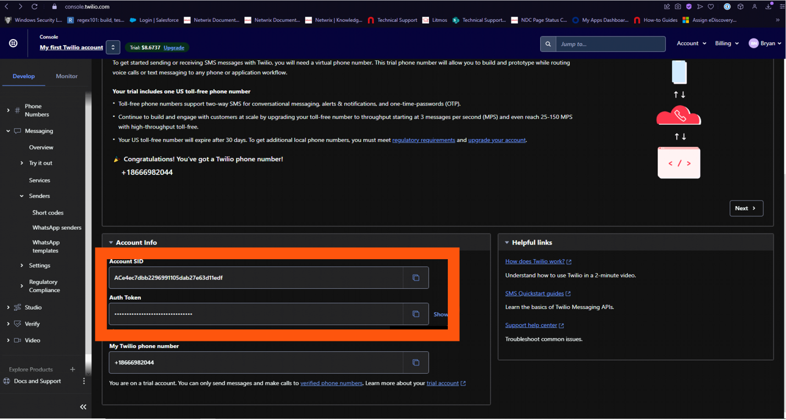
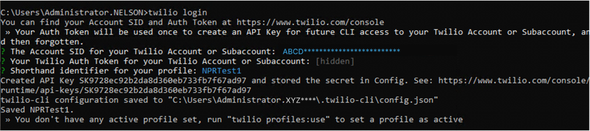
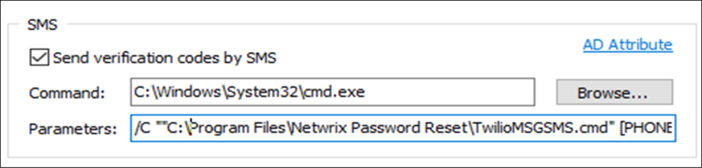

Overview
The Twilio CLI allows to manage phone numbers, call Twilio APIs, and test webhooks.
Instructions
-
Download Twilio from the official website (recommended to use Windows): Install the Twilio CLI ⸱ Twilio 🡥
-
Being logged in with the NPR Service Account, open CMD and log into Twilio accaunt.
-
In the Account info section, fill in the following fields:
-
Account SID
-
Auth Token
 -
-
Name the profile. A name has to be easy to remember.
Example:
NPRProfile1 -
Run CMD to load your Profile using the one you created:
twilio profiles:use NPRProfile1
-
Send the following text message:
twilio api:core:messages:create --from +1[Your Twilio Number here] --to "+1[PHONE]" --body "Test message"
TIP: to create a log in root of C for any debugging/troubleshooting, use[Previous command] >> C:\APRTWILIOTest.txt -
Create a file with the following format:
twilio api:core:messages:create --from +18666982044 --to %1 --body %2 >> C:\APRTWILIOTest.txt
 -
In NPR SMS Verification Settings, setup Command and Parameter
IMPORTANT: every time a setting is changed for Parameter in the NPR Settings for Verification, the Service Account needs to be restarted. Failure to do so may result in the changes not taking effect or the SMS not being sent on Unlock/Resets.-
Command:
C:\Windows\System32\cmd.exe -
Parameter:
/C ""C:\Program Files\Netwrix Password Reset\TwilioMSGSMS.cmd" [PHONE] [CODE]"TIP: the default AD Attribute is set to MOBILE PHONE. You can change it by clicking on the AD Attribute link in the SMS settings.
-